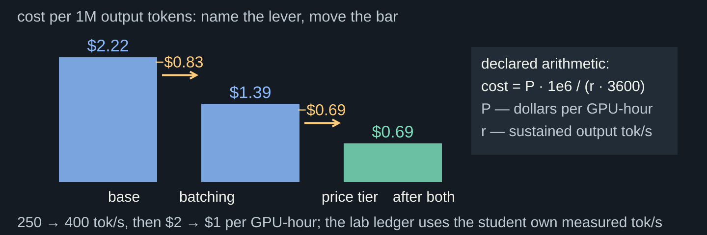

LLMOps:
observability, monitoring & cost control
Green dashboards lie — tails, bills and verdicts you can reproduce.
21:00: everything is green
Topic 13 · draftThe incident
Every request answered 200. CI was green. The mean-latency chart was flat. And users were angry: one burst second stretched their requests to 7.2 s while the fleet politely reported health.
What “healthy” missed
The mean is insensitive to a hot second: 96 fast requests drown 4 slow ones. Health was defined as reachability, not as the promise the service actually made — latency within an SLO.
The mean hides the tail
Topic 13 · draft

Four golden signals — all from one journal
Topic 13 · draft| Signal | SLI we declare | Journal source (layer-2) |
|---|---|---|
| Latency | p95 TTFT per 5-min window | per-request timing of experiment entries |
| Traffic | requests and tokens per minute | journal seq of experiment/burst entries |
| Errors | 429 and 5xx rate per minute | burst payload: admitted vs rejected |
| Saturation | queue depth / backlog | burst payload: slots, queue_slots, waits |
Logs you can prove
Topic 13 · draftOne stack, three views
Logs, metrics and traces are three views of the same events. In our stack the layer-2 journal plays all three at course scale: per-request records (logs), aggregates (metrics), request lifecycles (traces).
Why this journal is different
It is append-only and hash-sealed — lab 9 proved the drill: an edited line fails verification with broken_at:N. A dashboard fed by a provable journal is ground truth; one fed by editable logs is a rumor.
Journal → metrics → dashboard
Topic 13 · draft

Anatomy of a journal entry
Topic 13 · draft| Field | Feeds | Fails how if missing |
|---|---|---|
seq | ordering; gaps = lost events | metrics over silent holes |
ts | windowing, bucketing | “when” is a guess; no SLO window |
kind | experiment vs burst → which metric | 429 rate pollutes latency series |
payload | tokens, wall, tok/s, waits | the values themselves vanish |
prev-hash | verifiability of the whole history | any rewrite passes silently |
From incident to verified fact
Topic 13 · draftBurn rate: when a breach becomes a page
Topic 13 · draftAlert rules: symptoms, not causes
Topic 13 · draft| Rule | Window | Action | Why this shape |
|---|---|---|---|
| burn ≥ 8.3× on p95 TTFT | 10 min | page the on-call | fast, severe — the promise is breaking now |
| burn ≥ 3× | 1 h | ticket | slow erosion — humans can read it in the morning |
| 429 rate > 30/min sustained | 5 min | ticket + capacity review | admission doing its job, but load shape changed |
| mean-latency threshold | — | removed | the anti-example: green through the incident |
Alert fatigue vs silent failure
Topic 13 · draftFalse pages destroy the channel
Every page that wakes nobody’s action trains the on-call to swipe it away. An alert must be actionable: it names the SLO, the window and the lever. If the response is “look later”, it is a ticket.
Silence destroys the promise
The opposite failure: the mean-threshold alert that never fired during the 21:00 breach. A channel that only cries once a quarter is fine — provided the quarter’s cry is real.
The bill: cost per 1M output tokens
Topic 13 · draftCost levers: name the lever, move the bar
Topic 13 · draft

The lever catalog
Topic 13 · draft| Lever | Mechanism | Effect on $/1M | First risk |
|---|---|---|---|
| Batching | higher sustained tok/s | −37% (250 → 400) | latency of the batch |
| Price tier | spot/cheaper GPU-hour | −50% | availability, preemption |
| Admission | 429 for the worst tail | keeps SLA for the rest | fairness: who is rejected |
| Prompt cache | skip prefill on reuse | prefill only — output untouched | stale cache = wrong answers |
429 is a cost instrument
Topic 13 · draftRejecting is cheaper than serving late
The lab 08 envelope: bounded slots + queue, 429 + honest Retry-After. A rejection costs nothing and tells the client the truth; a late answer costs the SLA and invites retries, which amplify the load that caused them.
Fairness is a policy, not an accident
Who gets the 429? FIFO is honest to arrival order and brutal to bursty clients; the journal records every rejection, so the policy is auditable — and the audit is part of the runbook.
The score drifts
Topic 13 · draftSame suite, different verdicts
Run the same 100 prompts twice — batched versus isolated, warm cache versus cold — and six verdicts flip. Batch composition changes numerics and timing; the scheduler reorders work; a cache hit hides a regression.
The invariant protocol
Fixed prompt order, seeded decoding, cache-busting between samples, per-sample isolation. A verdict you cannot reproduce is not a verdict — it is weather. The judge scores only invariant runs.
Judge-grade reproducibility
Topic 13 · draft| Requirement | What it kills | Where you met it |
|---|---|---|
| pinned environment (lockfile) | “worked on my machine” | Round 01 setup, Topic 09 image |
| declared seeds | lucky sampling | every lab journal |
| batch-invariant suite | verdict weather | this topic’s protocol |
| snapshot at the deadline | moving targets | round tags + judge capture |
| private thresholds | overfitting the grader | the judge itself |
The drift drill
Topic 13 · draftTwo failure stories
Topic 13 · draftStory 1: the silent breach
Mean green, p95 at 7.2 s for forty minutes. Detection: the burn-rate page (8.3×, slide 9). Mitigation: tighten the admission envelope and scale on the backlog signal — both levers the students already operate.
Story 2: the edited history
Someone “fixes” a log line to hide the breach. Detection: chain verification names broken_at:N. Mitigation: dashboards read the journal only; hand-edited history is not a source, it is evidence of a second incident.
The runbook skeleton
Topic 13 · draft| Symptom | Query | Lever | Rollback |
|---|---|---|---|
| p95 breach, burn 8.3× | journal window 21:00–21:05 | tighten queue_slots | widen after load passes |
| bill doubles | cost ledger by lever | price tier / admission | revert tier, keep SLA |
| verdicts flip | invariant suite re-run | protocol B as the score | investigate run A cache |
| chain verify fails | broken_at index | freeze dashboards | restore from sealed backup |
What this model omits
Topic 13 · draftDeclared simplifications
No GPU/kernel traces, no multi-node correlation, token accounting approximate, prices flat. The journal is a gateway-level view: it sees requests and tokens, not SM occupancy.
Why it still holds
The method — SLI → SLO → burn-rate → invariant evaluation — is layer-independent. Deeper traces multiply the number of fields, not the discipline of naming sources, windows and percentiles.
Measurement contract and deliverable
Topic 13 · draftThe contract
Every number is journaled, the chain is verified, the percentile and window are named, prices are declared. A number without a source field is a mood; a source without a window is a rumor.
The deliverable
Your fleet: one SLO, one alert predicate with its window, one cost ledger with measured r, and the runbook skeleton filled with rehearsed rows. These are the first artifacts of the T16 defense story.
The block ahead
Topic 13 · draftT14: adapters change quality and cost
LoRA adapters multiply tenants over one base model — quality per tenant, switching costs, mixed traffic. Every claim about them is a measurement, and you now own the instruments to see it.
T15: the workload changes shape
Agentic loads fork, wait on tools and reuse prefixes; prefill and decode split into roles. Your admission envelope meets its real enemy: a workload that breathes.
Trends: agents optimize the infrastructure
Topic 13 · draft · closing preview| Track | The fact | What it means for you |
|---|---|---|
| Infrathon (arXiv 2611.11995) | coding agents optimize real infra on 12–24 h budgets; rankings shift with horizon; 135/150 runs improve in the second half | short evaluations lie — the lesson you just learned about means, applied to agents |
| The barrier list | task violations, testing the wrong code, premature completion — caught by a controller | someone must write the contract; that someone is an engineer |
| Your capstone (T16) | you supervise YOUR agent over the lab 08 admission policy; artifacts graded, not output | the engineering action becomes: design the contract, control the agent |
Read next
Sources behind today’s numbers- Beyer, B. et al. (Google) · Site Reliability Engineering — Monitoring Distributed Systems · SRE Book — golden signals; latency percentiles over means.2016
- Google SRE · SRE Workbook — Alerting on SLOs · SRE Workbook — burn-rate multiwindow alerting used on slide 9.2018
- Prometheus · Alerting rules overview · Prometheus docs — predicate/window mechanics behind slide 10.2026
- vLLM project · Production metrics · vLLM docs — the production-grade surface our journal models at course scale.2026
- Hu, Z. et al. · Infrathon: Benchmarking Language Agents for Real-World, Long-Horizon AI Infra Optimization · arXiv — the trends slide and the T16 capstone.2026
- This repository · judge/README.md — scoring, snapshot and reproducibility rules · in-repo — the worked instance of batch-invariant evaluation.2026
Зелёный дашборд — не здоровье.
Средняя — не латентность.
Name the SLI. Set the SLO. Verify the chain.
Page on the burn rate. Price the lever. Reproduce the verdict.